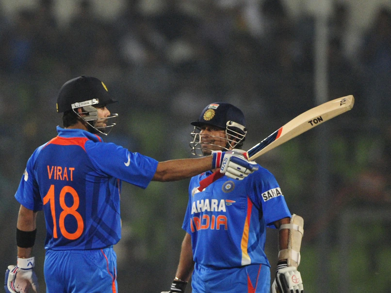

Date: September 01, 2023 07:48 AM IST
India and Pakistan are set to renew their rival when the two teams meet in Group A clash of the ongoing Asia Cup 2023 on Saturday in Kandy. For the first time ever, India and Pakistan will square off at the Pallekele International Stadium. The tickets have been sold out for the high-octane match, and so are the hotels and accommodation, in the capital of the Central Province. When it comes to India vs Pakistan in cricket, it is more than just a match. Powered By VDO.AI Video Player is loading. PlayUnmute Fullscreen And with the emotions attached to this contest, fans from both nations are also involved in this cricketing carnival. However, despite the political differences, players from both teams share immense respect for each other. But, this doesn't change the fact that either team would want to end up on the winning side. As India and Pakistan set to go on the cricket field, here's how both teams have fared up against each other in the Asia Cup historically. India and Pakistan have met 16 times in the Asia Cup since the inception of the tournament in 1984. While 13 matches have been played under the traditional One-Day format, only three of them have been contested in the shortest format. While Pakistan won the previous encounter last year in Dubai, India have been the more dominant side, historically and in recent time. With four wins in the last five matches, Rohit Sharma's men have a psychological advantage over their bitter rivals. Overall, India have won 9 matches -- 7 ODIs and 2 T20Is -- as compared to Pakistan, who have been on the winning side just six times -- 5 ODIs and 1 T20I. India vs Pakistan over the years in Asia Cup: India beat Pakistan by 54 runs (Sharjah, 3 April 1984) India beat Pakistan by 4 wickets (Dhaka, 31 October 1988) Pakistan beat India by 97 runs (Sharjah, 7 April 1995) India vs Pakistan ends in a no contest (Colombo, 20 July 1997) Pakistan beat India by 44 runs (Dhaka, 3 June 2000) Pakistan beat India by 59 runs (Colombo, 25 July 2004) India beat Pakistan by 6 wickets (Karachi, 26 June 2008) Pakistan beat India by 8 wickets (Karachi, 2 July 2008) India beat Pakistan by 3 wickets (Dambulla, 19 June 2010) India beat Pakistan by 6 wickets (Mirpur, 18 March 2012) Pakistan beat India by 1 wicket (Mirpur, 2 March 2014) India beat Pakistan by 5 wickets (T20I; Mirpur, 27 February 2016) India beat Pakistan by 8 wickets (Dubai, 19 September 2018) India beat Pakistan by 9 wickets (Dubai, 23 September 2018) Listen to the latest songs, only on JioSaavn.com India beat Pakistan by 5 wickets (T20I; Dubai, 28 August 2022) Pakistan beat India by 5 wickets (T20I; Dubai, 4 September 2022)